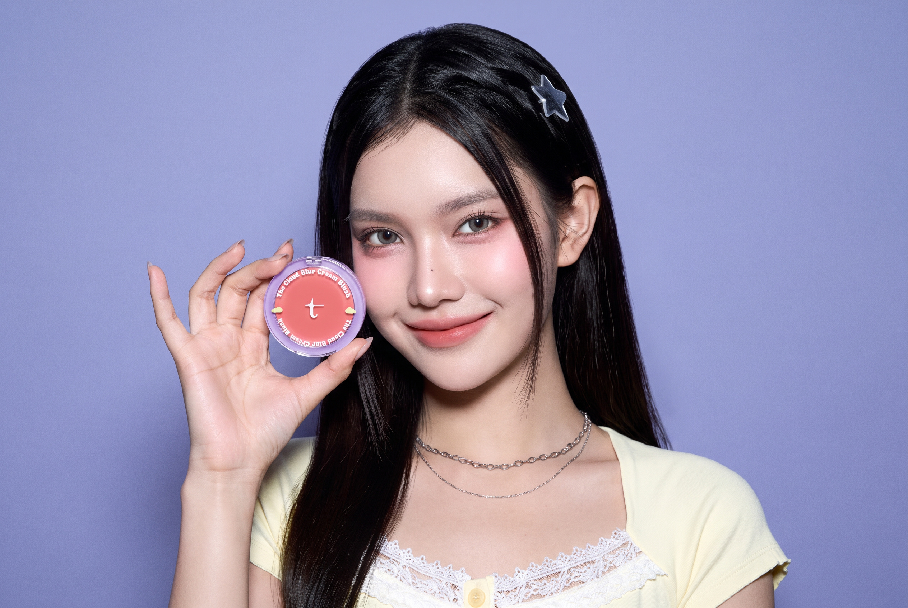
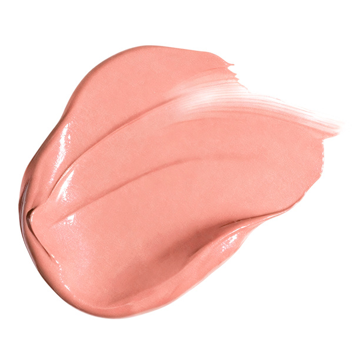
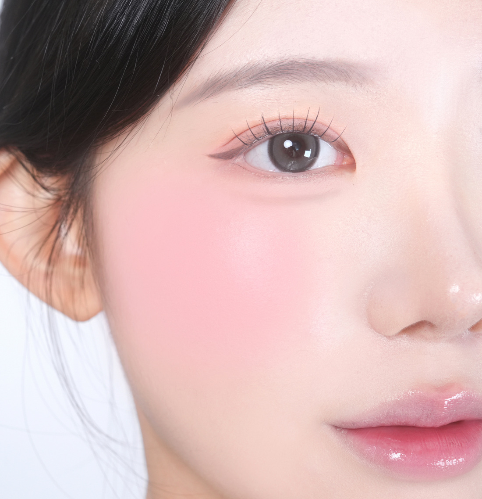
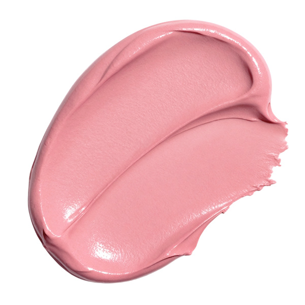
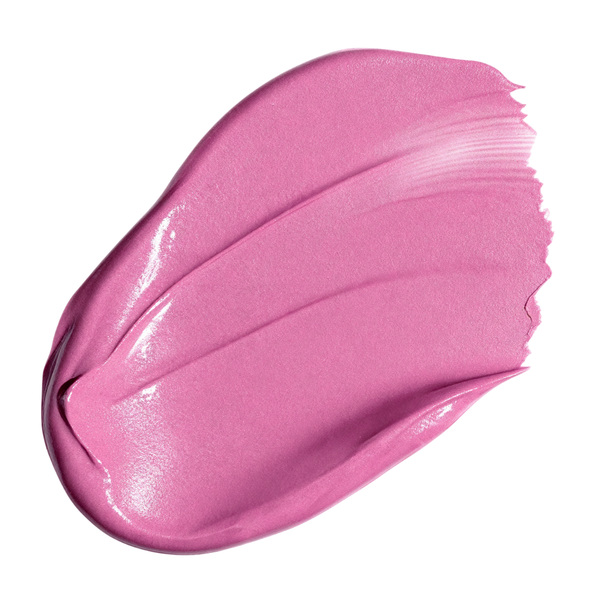
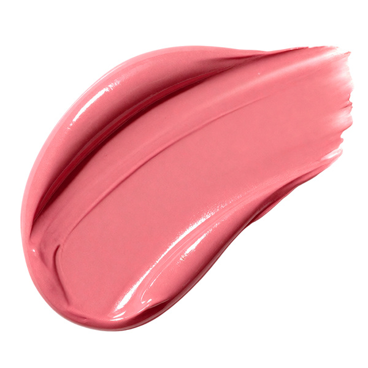
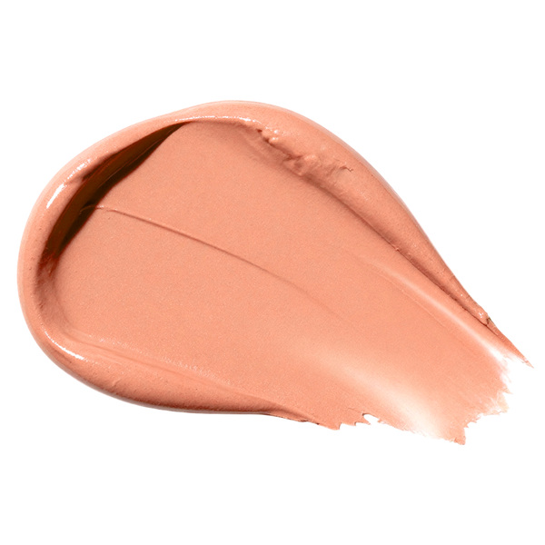
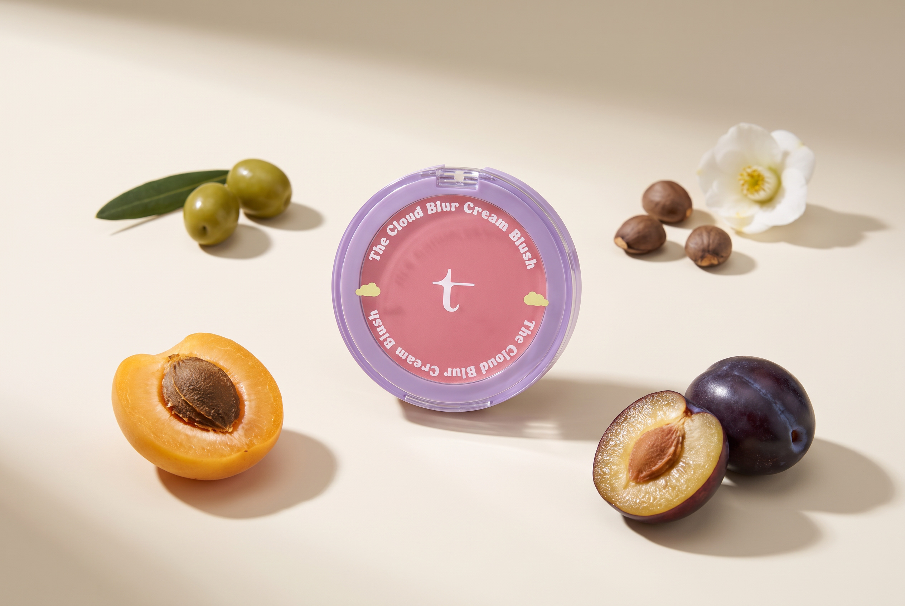
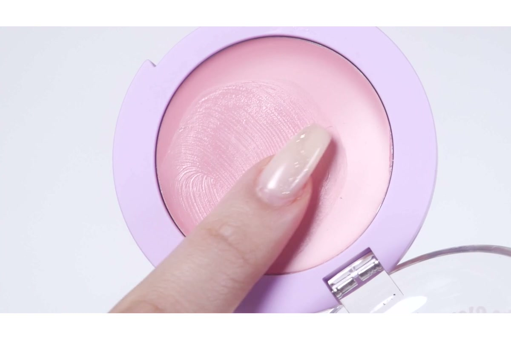
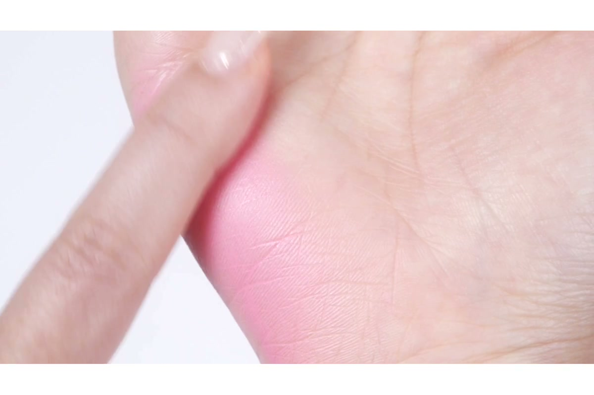

색의 경계를 가볍게 두드려 풀어주면 볼 위에 은은하게 번지는 컬러와 보송한 피부 표현을 연출할 수 있어요.

부드러운 컬러로 완성하는 블러 치크.모델 연출 이미지
SIX SHADES OF CLOUD
은은한 피치부터 선명한 핑크까지.
부드러운 크림 텍스처에 담은 여섯 가지 컬러. 제형의 색과 볼 위에 펴 바른 색을 함께 비교해 보세요.
01
백도 쉐이크
WHITE PEACH SHAKE

부드러운 피치 핑크
복숭아빛을 머금은 핑크로 은은하고 부드러운 볼.
02
구아바 쉐이크
GUAVA SHAKE


차분한 로지 핑크
차분한 장밋빛으로 자연스럽게 물든 볼.
03
아사이베리 쉐이크
ACAI BERRY SHAKE

화사한 라벤더 핑크
보랏빛이 감도는 핑크로 맑고 화사한 볼.
04
파파야 쉐이크
PAPAYA SHAKE
따뜻한 코랄 오렌지
오렌지를 더한 코랄로 따뜻하고 산뜻한 볼.
05
용과 쉐이크
DRAGON FRUIT SHAKE

선명한 핑크
선명한 핑크 한 겹으로 또렷한 포인트를 준 볼.
06
살구 쉐이크
APRICOT SHAKE

차분한 살구 베이지
베이지가 섞인 살구빛으로 차분하고 포근한 볼.
피부 톤과 사용량, 조명 및 화면 환경에 따라 발색이 다르게 보일 수 있습니다.
VEGAN FORMULA
보송한 치크에 담은 네 가지 오일.
살구씨·동백나무씨·올리브·서양자두씨 오일을 함께 담은 비건 포뮬러입니다.

살구씨오일
APRICOT KERNEL OIL
동백나무씨오일
CAMELLIA SEED OIL
올리브오일
OLIVE FRUIT OIL
서양자두씨오일
PLUM SEED OIL
원료를 표현한 연출 이미지입니다.
HOW TO USE
소량씩 얇게, 손끝으로 톡톡.
손가락이나 도구로 얇게 펴 바르고, 가볍게 두드려 마무리해 주세요.

01
소량 묻히기
깨끗한 손끝이나 도구에 제형을 조금씩 묻혀 주세요.

02
얇게 펴 바르기
원하는 부위에 얇게 펴 바른 뒤 경계를 가볍게 두드려 주세요.
진한 발색을 원할 때는 소량씩 덧발라 농도를 조절해 보세요.
THE CLOUD BLUR CREAM BLUSH
부드러운 컬러, 보송한 블러 치크.
더 클라우드 블러 크림 블러셔 6 COLOURS · 2.8 g
제품 정보 · 전성분
용량 및 중량 2.8 g I 0.09oz 제품 주요 사양 모든 피부 사용 기한 개봉 전 36개월 / 개봉 후 12개월 사용 방법 손가락이나 도구를 이용해 생기가 필요한 부분에 얇게 펴 바르고 가볍게 두드려 밀착시켜줍니다. 화장품책임판매업자 주식회사 에이위즈 제조국 한국 품질보증 기준 본 제품에 이상이 있을 경우, 공정거래 위원회 고시 소비자 분쟁 해결 기준에 따라 보상해 드립니다. 탐뷰티 고객상담실 1668-0868( 수신자 요금부담)